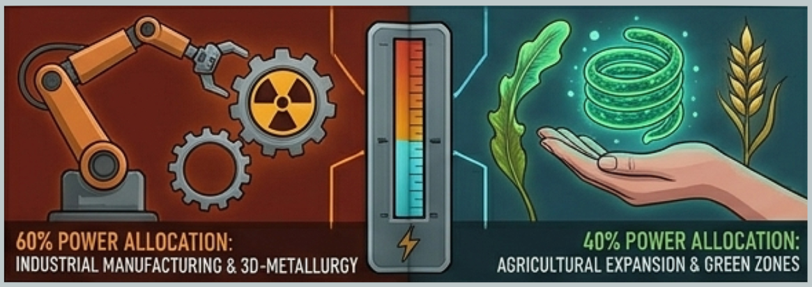

With 80 citizens now calling Planum Boreum home, our polar settlement is rapidly transitioning from a temporary research outpost into a permanent society. However, flourishing in a sub-zero desert requires immense energy, and our nuclear-geothermal grid is facing its first major ideological strain as the grueling polar night approaches. The colony has split into two distinct factions over how to allocate our current energy surplus. The "Oxides"—composed of heavy engineering and manufacturing specialists—argue that 60% of surplus power must be directed to automated 3D-printing metallurgy bays to achieve industrial independence from Earth. They believe manufacturing heavy machinery and building robust habitat extensions right here from Martian raw materials is the only way to secure our future.
Council Leader Dmitry Sokolov.
Opposing them are the "Eco-Centrists," a faction led by the biotech agricultural division and community health specialists. They firmly believe that our psychological and physical well-being depends entirely on allocating that power to expanding our bioluminescent green zones and hydroponic farms. With seasonal darkness cutting off all natural light, they argue that keeping 80 people sane and healthy during a multi-year mission requires a robust, thriving ecosystem rather than just a sterile factory floor. As Council Leader Dmitry Sokolov noted, this isn't just a dispute over kilowatts—it is a debate over our identity. Are we merely an industrial station operating in the ice, or are we the proud founders of a new, living Martian civilization? A colony-wide referendum is scheduled for Sol 142 to decide the balance of our closed-loop ecosystem.